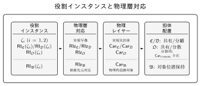
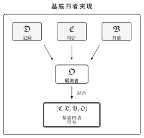

3 物理担体実現と操作入力形成
命題2.12により、対象指定添字族 と、各 が指定する物理的追跡対象、局所場面 および局所四役割結合証拠から、定義2.10の役割インスタンス束族 が定まる。各束は対象指定位置と基底役割型集合 の四成分位置を保持する。由来成分族と物理的追跡対象との抽象化元対応は対象指定に含まれ、由来三成分族は物理担体実現指定の定義域側入力をなす。


![\mathsf{RI}[Z_{0}]](math-S3/ee7ef67d6a003ae660de689eb8a958190c02ebcf3d82a3440f3e54e966cc3c22.svg)


ソース側役割型集合と比較役割型集合を

によって定める。
3.1 役割インスタンスの物理担体実現
定義 3.1 (物理レイヤー構成族).

族 は、時計側、記録側、観測者側情報結合の各役割インスタンス族へ割り当てられる物理担体族を役割型 によって添字付ける。対象状態側物理的追跡対象族を

によって定める。各 は、対象指定添字 を付与され、 の抽象化元となる物理的追跡対象である。異なる に対して、

を許容する。 は、複数の物理担体の間に共同情報結合を成立させる物理接続担体族である。
の役割型添字族を展開すると、五成分表示
![\mathsf{Car}_{\mathrm{phys}}[Z_{0}]](math-S3/dd617496eb076a0c6bc80b73fcabb99dde2030db80b3bbae0226da03ffac4990.svg)
を得る。
定義 3.2 (抽象・物理レイヤー間役割型付き対応系列).
定義2.10の対象指定添字族 上の役割インスタンス束族 と、定義3.1の物理レイヤー構成族 に対して、各
の実現写像を
によって定める。対象指定付き物理担体値写像を

によって定める。各 に対して、は、由来役割インスタンスへ割り当てられる実装側対応先である。
各

に対して、対象状態側抽象化元対応を
によって定める。さらに、各
に対して、その制限を
によって定める。 の第一成分は対象指定添字 を付与された物理的追跡対象であり、第二成分はその対象状態から抽象化された局所操作成分 を保持する対象状態側役割インスタンスである。異なる に対して

が成り立つ場合にも、

が成り立ち、対象指定添字位置ごとの抽象化元対応が保持される。
は実現写像族であり、 は物理的追跡対象から対象状態側役割インスタンスへの抽象化元対応族である。
備考 3.3 (役割インスタンス同一性と実装側同一性).
定義 3.4 (役割型付き物理担体対応パターン).
異なる二つの対象指定添字 と各
に対して、物理担体一致条件と物理担体差異条件を、それぞれ
および
によって定める。
時計側および記録側では、物理担体一致条件を共有型、物理担体差異条件を分離型と呼ぶ。
観測者側では、物理担体一致条件を共有型と呼ぶ。観測者側分散型は物理担体差異条件が成り立ち、両実装側対応先の間に、 に属する物理接続担体を介した共同情報結合が構成される場合である。
役割型付き物理担体対応パターンは、側の共有型または分離型、側の共有型または分離型、側の共有型または分散型からなる三成分条件である。側と側の各成分は対応する役割型の実現写像だけを条件入力とする。側成分は由来実現写像を条件入力とし、分散型ではさらに物理接続担体の介在を条件入力とする。由来成分は、定義3.2の対象指定位置付き抽象化元対応族として保持される。




図中の数式

| 物理担体対応パターン | 物理担体実現条件 |
|---|---|
| 共有型 | |
| 分離型 | |
| 共有型 | |
| 分散型 |
、
かつ に属する物理接続担体を介した共同情報結合 |
表1の各物理担体対応パターンの構成上の意味は次である。
-
•
共有型と分離型は、それぞれ同一物理時計担体または対象ごとに異なる物理時計担体による時計側役割の実現を表す。
-
•
共有型と分離型は、それぞれ同一物理記録担体または対象ごとに異なる物理記録担体による記録側役割の実現を表す。
-
•
共有型では、一つの物理情報結合担体が二つの観測者側情報結合役割を実現する。
-
•
分散型では、対象ごとに異なる物理情報結合担体が観測者側情報結合役割を実現し、それらの間の共同情報結合は に属する物理接続担体を介して構成される。
命題 3.5 (役割型別実現条件の組合せ可能性).
異なる二つの対象指定添字
をとる。各
について、共有型または分離型を一つ選ぶ。選択された各型に対して、実装側対応先として指定可能な物理担体
が存在し、
を満たすとする。共有型を選択した場合は
分離型を選択した場合は
とする。
さらに、側について共有型または分散型の一方を満たす実装側対応先が与えられ、分散型では に属する物理接続担体を介した共同情報結合が与えられるとする。
このとき、側条件と側条件は、それぞれの役割型位置を保ったまま、与えられた側条件と組み合わせられ、定義3.4の役割型付き三成分条件を構成する。この組合せは、
を対象指定位置付き抽象化元対応族として保持する。
証明.
定義3.1の物理レイヤー構成族 は、実現写像終域側物理担体族、対象状態側物理的追跡対象族および物理接続担体族を役割型位置付きで保持する。定義3.2により、各
について
である。したがって、 の指定は役割型 の位置だけを定める。
定義3.4により、各 の条件は、 の一致または差異だけで定まる。各条件は他の役割型の実現写像値を条件入力としないため、時計側指定と記録側指定は役割型位置ごとに組み合わせられる。側条件は由来実現写像の値と、分散型における物理接続担体の介在によって定まり、時計側および記録側の指定を条件入力としない。これにより、三成分条件が構成される。

対象状態側対応
は、各対象指定位置における物理的追跡対象と対象状態側役割インスタンスの抽象化元対応を保持する。この対応族は、定義3.2の実現写像族の値を条件入力としないため、三成分条件との組合せによって変更されない。 ∎
3.2 対象指定位置と役割型位置
3.3 役割インスタンス同一性と実装側同一性
定義2.9により、対象指定付き役割インスタンスの同一性は対象指定添字によって定まる。由来の実装側同一性は、定義3.2の各実現写像の値によって定まる。由来成分の抽象化元同一性は、各対象指定添字が指定する物理的追跡対象によって定まる。
複数の対象指定、物理担体、ソース系列または観測者側受容局面が関与する構成では、対象指定位置、役割型位置、系列位置および受容局面位置を保持した添字付き族を用いる。
3.4 多重性と物理配置条件
定義3.4の役割型付き物理担体対応パターンは、異なる二つの対象指定添字に対する共有型または分離型、共有型または分離型、共有型または分散型の三成分条件を定める。由来成分は、定義3.2の対象指定位置付き抽象化元対応族として保持される。
複数の時計側系列、記録側系列、対象状態側系列または観測者側受容局面をもつ構成では、系列位置と対象指定位置を保持し、役割型ごとの実現指定および受容条件を区別する。

図中の数式

3.5 物理担体実現と受容網の結合
3.6 操作入力形成
3.6.1 生操作入力
以下、本節では、役割型と受容局面の一組を各記号根の完全形で初出させる。 その後、同じ定義、命題または証明内で受容局面が固定され、完全形へ一意に 復元できる場合に限り、受容局面の下付きだけを省略する。役割型は常に保持し、 受容局面が動く場合または異なる受容局面を同時に扱う場合は完全形を保つ。
観測者側受容局面および比較局面の非空添字集合を

とする。各 に対して、観測者側受容担体

およびソース側役割型で添字付けた受容集合族
を与える。役割型タグ付き受容集合 を
で定める。
各 に対して、
を 上の部分順序とする。各 について、 由来受容集合上の部分順序を、任意の
に対して
によって定める。
各ソース側役割型に由来する全局所受容空間を、各 について
で定める。
定義 3.6 (生操作入力).
受容網を
で定める。生操作入力を
で定める。
3.6.2 ソース側実現データム
時計側、記録側、対象状態側のソース構造
由来ソース添字の非空集合を
とし、由来ソース族を
で表す。各 は、 に属する物理担体によって支持され、定義2.2の内部カウンタ位置と更新を供給する由来物理ソースである。添字 は、物理担体、内部更新規則、初期内部位置、接続経路または運用系列の差異を標識する。

各 は、定義2.2のサイクル数ソースを 由来ソースとして具体化する。
定義 3.7 (由来ソーストークン族).
各
に対して、内部カウンタ位置 に対応する 由来トークン個体を

と書く。各 について、
と定める。添字付きトークン族は、同一ソース内で
を満たす。
由来全ソーストークン集合を
と定める。このとき、
が成立する。この一意な組の第一成分を与えるソース添字写像を
とし、
で定める。
定義 3.8 (由来ソース内順序).
各
に対して、二項関係
を、すべての について

によって定める。
命題 3.9 (由来ソース内順序の部分順序性).
各
について、
は
上の部分順序である。
証明.

自然数上の反射性 と定義3.8から を得る。二つの比較 と が成立すると、同じ定義から を得る。自然数上の推移性から であり、 が成立する。
と が成立すると、 かつ である。自然数上の反対称性から を得て、同定義のトークン同一性から を得る。したがって、この関係は部分順序である。 ∎
定義 3.10 (由来ソースの表示).
由来表示ラベル集合を
とする。各 に対して表示写像
を定める。全体表示写像
を
で定める。
任意の
について、

かつ
であるとき、
である。表示ラベルは 由来トークン個体の表示内容を与え、ソース所属は定義3.7のソース添字写像 が与える。 表示ラベル集合と表示写像は時間変数、時間間隔、周期、振動数または秒をトークンへ割り当てない。
定義 3.11 (由来トークンの内部カウンタ).
由来物理記録担体が生成して保持する由来ソーストークンの非空集合を

とする。各由来トークンは、に属する物理記録担体上の一つの記録個体である。由来表示内容、由来対象指定内容および両者の対応からなる由来局所記録内容の集合を
とし、記録内容写像を
と定める。内部記録添字写像を
と定める。各 は、記録内容 と内部記録添字 の組によって一意に指定され、任意の に対して

が成り立つ。
定義 3.12 (由来記録添字順序).

命題 3.13 (由来記録添字順序の部分順序性).
関係
は
上の部分順序である。
証明.
任意の をとる。 であるため、定義3.12から を得る。
かつ とする。定義3.12が与える二つの選言のいずれかが等号枝なら、その等号を他方の選言へ代入して を得る。両方が厳密順序枝なら、
であり、自然数上の厳密順序の推移性から同じ結論を得る。したがって、 は推移的である。

系 3.14 (同一記録添字を持つ異なる由来トークンの比較不能性).
任意の
について、
ならば
である。
証明.
定義 3.15 (由来記録セル).
各 に対して、由来物理記録担体が同一の有限記録単位として保持する由来トークン集合を
とし、
を要求する。さらに、任意の に対して
を要求する。 を、 を含む由来記録セルと呼ぶ。
この条件により、由来全ソーストークン集合は互いに素な記録セルへ分割される。各記録セルは、同一の有限記録単位として保持される由来トークン群である。
定義 3.16 (由来ソーストークンと対象指定位置).
由来物理的追跡対象が供給する由来ソーストークンの非空集合を

とする。対象指定位置写像を
と定める。各 は、
が保持する抽象化元対応の第一成分である物理的追跡対象から供給され、その対象状態を表すソース側トークンである。同じ対象指定位置から複数の由来ソーストークンが供給されることを許容する。
定義 3.17 (由来ソース族直和順序).


命題 3.18 (由来ソース族直和順序の部分順序性).
関係
は
上の部分順序である。
証明.
両向きの比較が成立すると、両トークンは同一の由来ソース成分に属し、その成分内でも両向きの比較が成立する。命題3.9の反対称性から両トークンは等しい。したがって、 は部分順序である。 ∎
系 3.19 (異なる由来ソース間の比較不能性).
任意の
について、
ならば
である。
証明.
定義3.17により、 と は、それぞれ所属ソース添字の等値を必要とする。仮定された添字の不等号により、両方とも成立しない。 ∎
定義 3.20 (比較側到着写像).
各 と に対して、定義域
をもつ比較側到着写像を
と定める。各写像は 由来ソース側トークンを観測者側受容集合へ対応させる。異なるソース側トークンが同一の受容へ写る場合、その受容の逆像の濃度は2以上である。
定義3.20において とすると、由来ソーストークンが観測者側受容へ対応する。

定義 3.21 (比較側回復写像).
各 と に対して、一意回復可能受容集合を
で定める。比較側回復写像を
とし、各 に対して
によって定める。
由来トークン の到着値が一意回復可能であるとき、
が成り立つ。由来トークン の到着値が一意回復可能であるとき、

が成り立つ。
定義 3.22 (比較段階二役割関係).
各

に対して、比較段階の比較二役割由来関係を
と定める。その元
は、観測者側受容局面 において同一の比較材料を構成する時計側受容と記録側受容を役割型で添字付ける。
定義 3.23 (ソース側二役割関係).
ソース側比較二役割由来関係を
と定める。各
および
に対して、ソース側関係と比較側関係に
という整合条件を要求する。
定義 3.24 (ソース側実現データム).
ソース側トークン族、表示・記録データ、ソース側順序、比較側到着写像群、比較側回復写像群、比較側・ソース側関係を、それぞれ
ソース側実現データムを

と定める。
3.6.3 実現済み操作構成
比較構成の定義域側入力を、実現済み操作構成 とする。

命題 3.26 (実現済み操作構成の成分指定).
定義3.25の実現済み操作構成 は、対象指定位置と役割型位置を保持する役割インスタンス束族、物理担体実現、観測者側受容網、由来ソーストークン族、表示・記録データ、ソース側順序、比較側到着写像群、比較側回復写像群および比較側・ソース側関係を型付き成分として指定する。この構成の入力データは、時間変数、時間間隔、周期、振動数および秒を含まない。

証明.
定義3.6は、対象指定添字族上の役割インスタンス束族、物理レイヤー構成族、由来実現写像、由来抽象化元対応族および観測者側受容網を生操作入力として定める。
定義3.24は、由来ソーストークン族、表示・記録データ、ソース側順序、由来比較側到着写像族、由来比較側回復写像族、および由来の比較側・ソース側関係をソース側実現データムとして定める。定義3.25は、これら二つを順序対 として保持する。


したがって、対象指定位置、役割型位置、物理実現、受容、ソーストークン、表示・記録データ、順序、到着、回復および対応関係は、 の型付き成分として指定される。各成分は内部位置、自然数添字、写像、関係および受容順序によって構成され、時間量を入力に置かない。 ∎